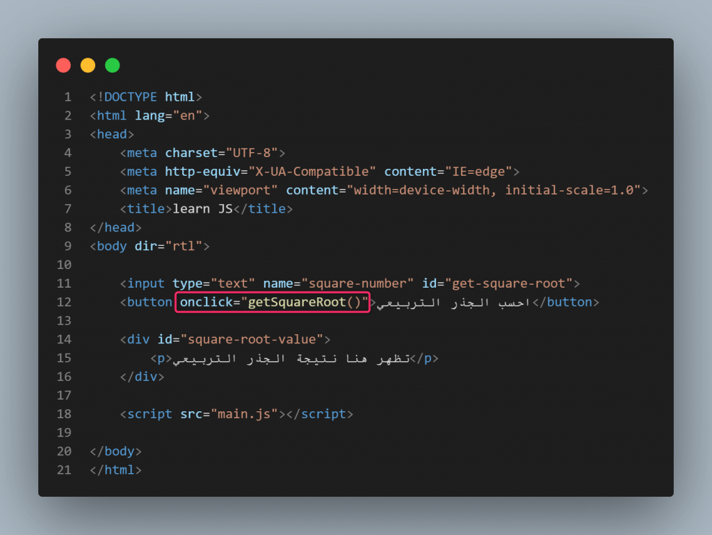

إعداد الطالبة: سلمى رضا المنجي محمد الباز
الرقم الجامعي: 2504363
أصبحت مواقع الويب من أهم وسائل الحصول على المعلومات والتواصل والتعلم والتسوق عبر الإنترنت. ومع تطور هذه المواقع، لم يعد المستخدم يكتفي بقراءة النصوص ومشاهدة الصور فقط، بل أصبح يتوقع التفاعل مع عناصر الصفحة بسهولة وسرعة.
وتُعد لغة JavaScript من لغات البرمجة المهمة في تطوير الويب، حيث تساعد على إضافة التفاعل والحركة إلى صفحات المواقع، مثل الاستجابة لنقرات المستخدم، والتحقق من البيانات المدخلة، وتحديث محتوى الصفحة دون الحاجة إلى إعادة تحميلها في كثير من الحالات.
يهدف هذا التقرير إلى التعريف بلغة JavaScript، وتوضيح أهم استخداماتها ودورها في تطوير صفحات ويب تفاعلية، مع تقديم أمثلة برمجية بسيطة.
JavaScript (واختصاراً JS) هي لغة برمجة عالية المستوى (High-Level)، وتفسيرية (Interpreted)، وتُصنف كواحدة من لغات البرمجة الأكثر شيوعاً واستخداماً في العالم. تتميز بأنها تعمل بشكل أساسي داخل متصفح المستخدم (Client-Side)، مما يعني أن الكود يُنفذ مباشرة على جهاز الكمبيوتر أو الهاتف الخاص بالزائر دون الحاجة للرجوع المستمر إلى الخادم (Server). ومع التطور التقني، امتدت أيضاً على الخوادم (Server-Side) باستخدام بيئات تشغيل حديثة لتصبح لغة متكاملة تعمل في كل مكان.
الشعار الرسمي للغة المستخدمة في جعل الصفحات تفاعلية:

نلخص أهم أسباب استخدام اللغة في النقاط المحددة والجدول التالي:
| الاستخدام الأساسي | طبيعة العمل والتأثير | أمثلة تطبيقية |
|---|---|---|
| التفاعل مع الأزرار (Button Interaction) | تُستخدم للتحكم في سلوك الأزرار والتقاط أحداث المستخدم وتنفيذ أوامر فورية. | فتح قائمة جانبية، إظهار نافذة منبثقة، أو تشغيل فيديو. |
| التحقق من البيانات في النماذج (Form Validation) | فحص المدخلات (مثل البريد الإلكتروني أو كلمة المرور) قبل إرسالها إلى السيرفر. | منع إرسال النموذج وإظهار رسالة تحذيرية حمراء إذا نسي المستخدم رمز "@". |
| تغيير محتوى الصفحة (DOM Manipulation) | الوصول إلى بنية الصفحة وتغيير النصوص، أو استبدال الصور، أو تعديل ألوان التنسيق لحظياً. | تحديث العناوين وتغيير الألوان بناءً على شروط برمجية محددة. |
يوضح العنصر التالي كود HTML يحتوي على زر تفاعلي، وعند الضغط عليه تقوم لغة JavaScript بتغيير النص المعروض فوراً:
تتميز اللغة بعدة خصائص جعلتها أساسية لتطوير تطبيقات الويب:
بناءً على ما تم استعراضه، يتضح أن لغة JavaScript لم تعد مجرد أداة إضافية لتحريك بعض الصور على المتصفح، بل أصبحت لغة برمجية سيادية ومحورية تدير الويب الحديث بكافة أبعاده.